Painting · Ceramics · Printmaking · Sculpture
Transforming memories, culture, and emotions into visual experiences.
Fine Art
Figures, surfaces, and the weight of a single color.
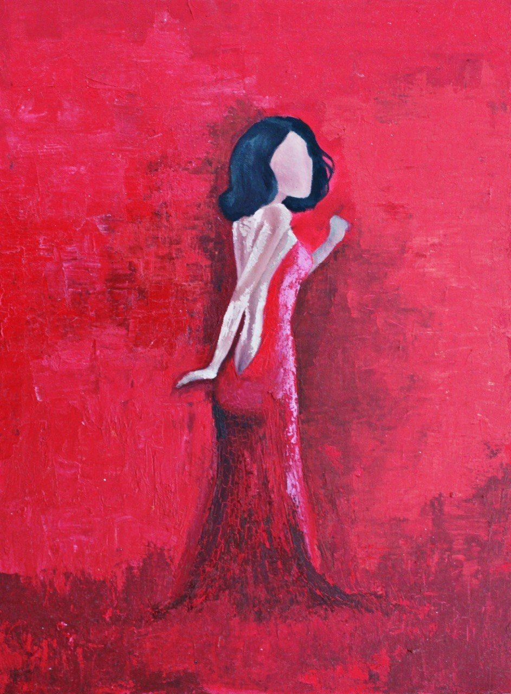
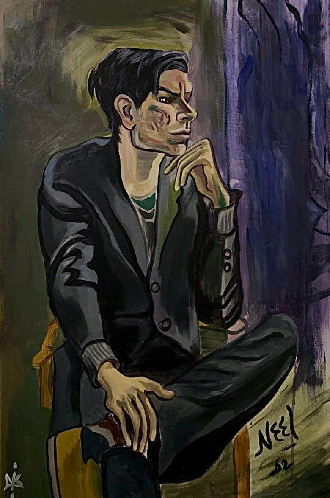
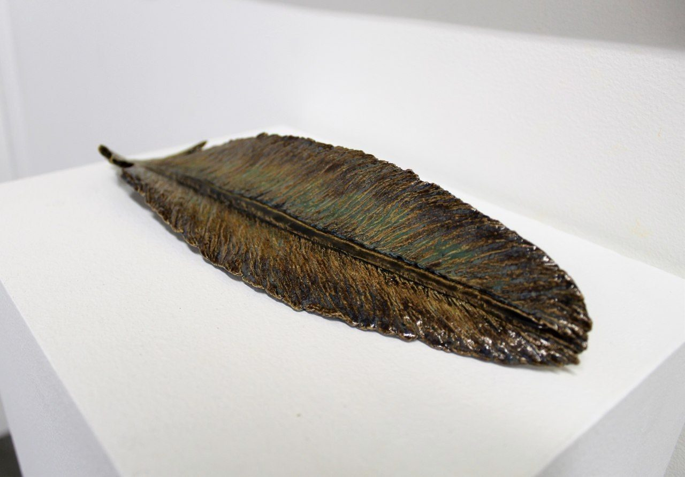
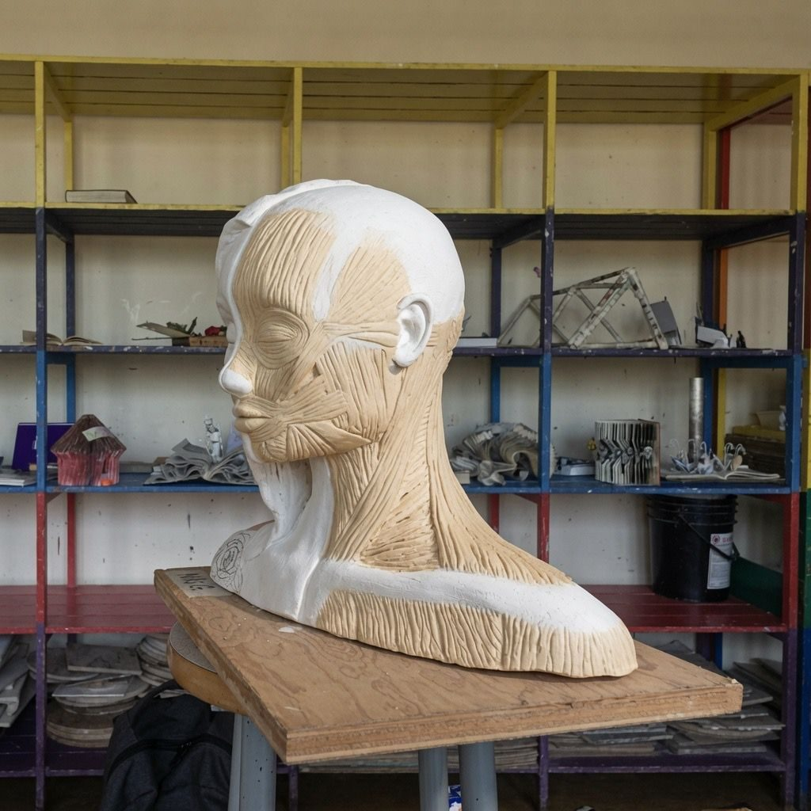
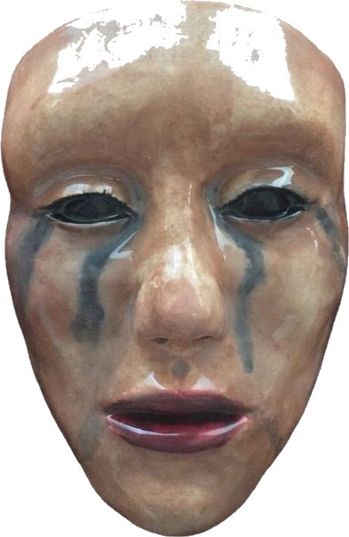
passing the studio door —
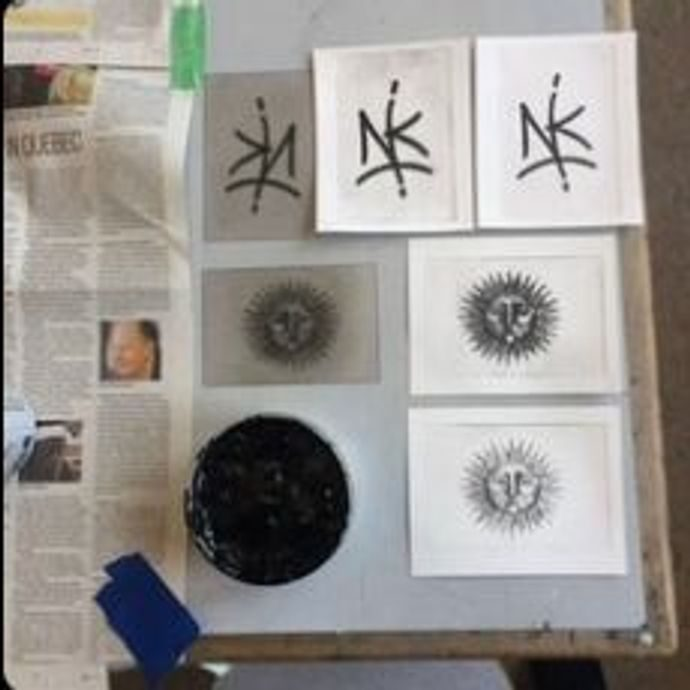
— where raw material learns its shape
Cultural Memory
Clay, calligraphy, and stories carried from Persia.
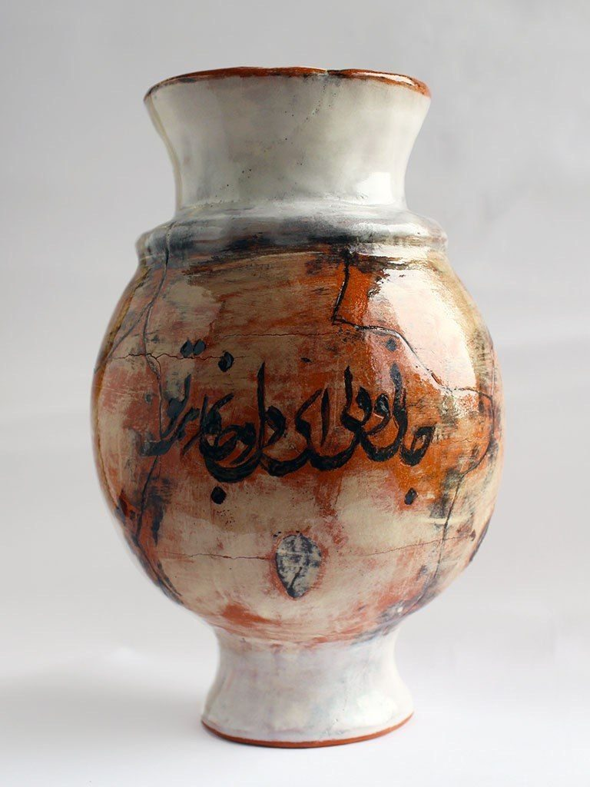
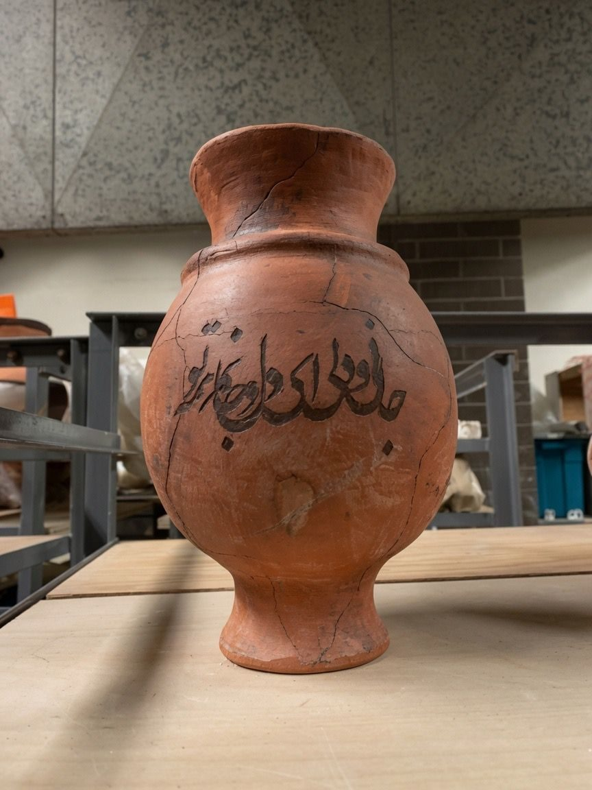
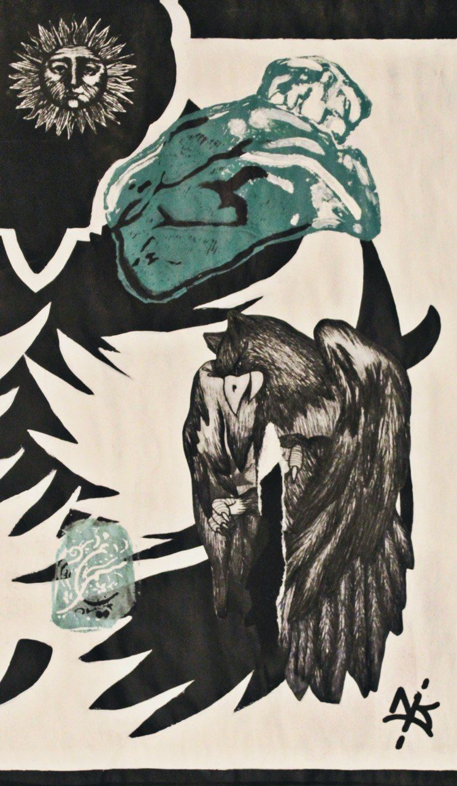
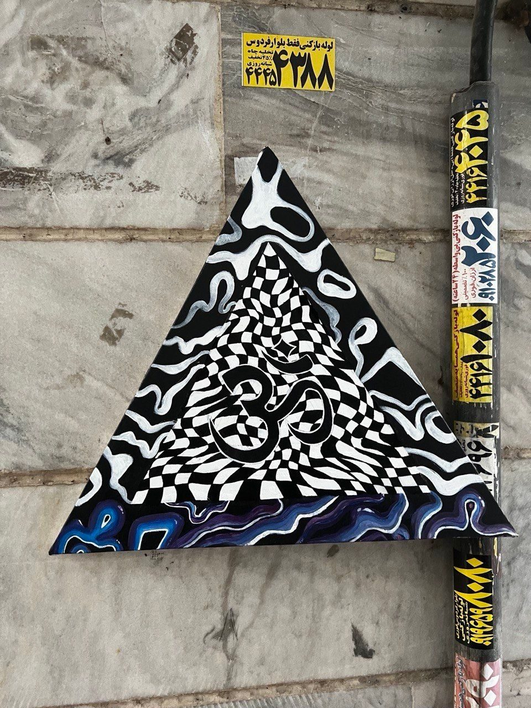
Experimental
Structure, noise, and what cardboard wants to become.
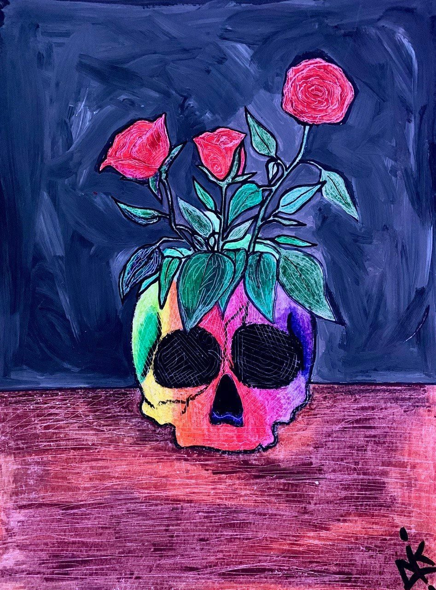
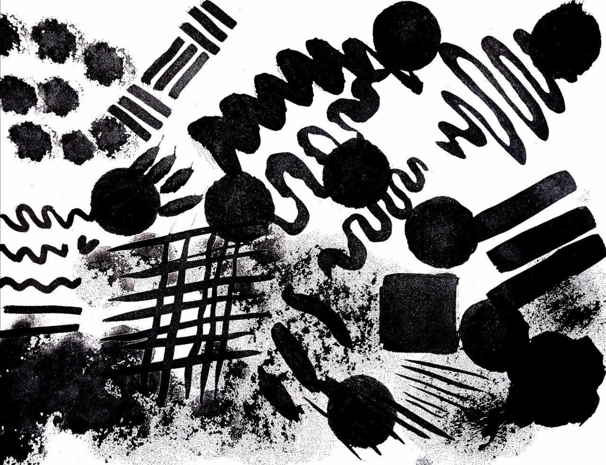
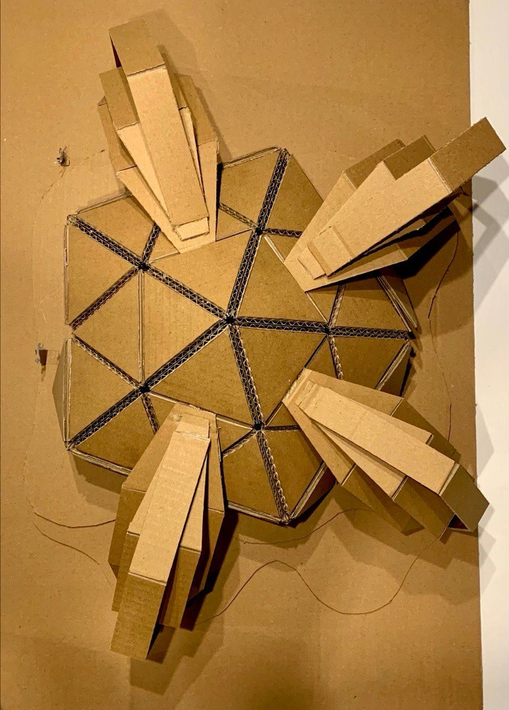
I work between clay, ink, and paint —
carrying memory and myth into material,
until raw matter learns to hold a feeling.
Niki Ghanbari